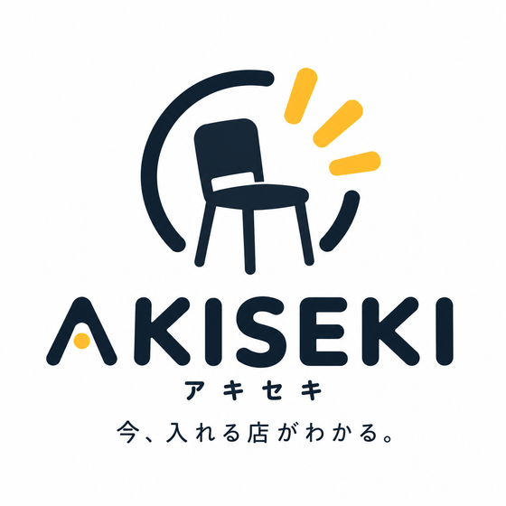

お店の営業中に
管理画面で席の状態を更新。着席したら使用中に、席が空いたら空席に。更新情報は顧客画面へ自動で反映されます。
営業開始 → 席の状態を更新 → お客様へ
FROM THE RESTAURANT FLOOR

今、入れる店が
わかる。
お店の「空いています」を、
今、お店を探している人へ。
山崎 翔が飲食の現場から開発した、空席情報を届けるサービス。東京・湯島のワインバー「Tsuki-akari」で実証を続けています。
Tsuki-akariで実証中 / AKISEKI β
01 / THE STORY
満席でお客様をご案内できないお店がある。
その一方で、近くには空席のあるお店もある。
お客様は、電話をかけたり店頭まで足を運んだりしなければ、その「今」を知ることができません。
お店が知っている空席と、
お客様が知りたい空席をつなぐ。
Tsuki-akariを運営する山崎 翔が、日々の店舗運営を起点に開発したのがAKISEKIです。実際の店で使いながら、忙しい営業中にも続けられる仕組みを確かめています。
02 / HOW IT WORKS
管理画面で席の状態を更新。着席したら使用中に、席が空いたら空席に。更新情報は顧客画面へ自動で反映されます。
営業開始 → 席の状態を更新 → お客様へ
店舗ページや店頭QRから、空席情報とお知らせを確認。必要に応じて電話で確かめ、その日の来店を考えられます。
店舗ページ・QR → 状況を確認 → 電話・来店検討
表示は店舗スタッフの更新に基づきます。予約や席の確保を保証するものではありません。
03 / AVAILABLE NOW
毎日の営業と、
お客様への案内に必要な機能を。
β版として改善を続けています。祝日設定の対応年は管理画面でご確認ください。
04 / IN THE FIELD
東京・湯島のワインバーが、AKISEKIの実証の場です。席更新の操作感や、お客様への伝わり方を、実際の店舗運営のなかで検証しています。
Tsuki-akariの店舗サイト05 / AKISEKI FREE
アカウントのメール確認後、店舗情報と席を準備。内容を確認して、店舗ページを公開できます。
NEXT / 目指す未来
一つのお店の空席から、街の選択肢へ。
お店と、今入りたい人がつながる仕組みを育てていきます。
人数・地域でお店を横断して探す機能は、将来の構想です。